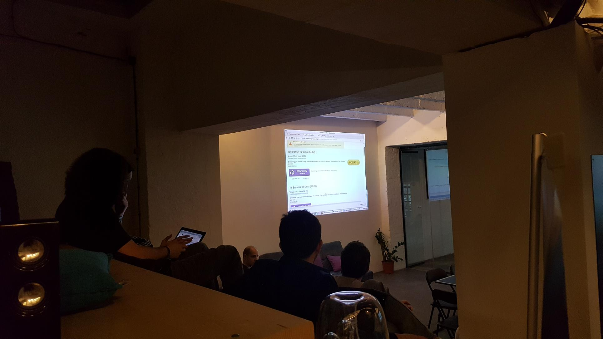

Dogadjaji
- Beograd 2016
- Sarajevo 2017, leto
- Rijeka 2017
- Sarajevo 2017, zima
- Beograd 2018
- Beograd 2018
- Beograd 2018
- Zaječar 2018
- Ljubljana 2018
- Tbilisi (Gruzija) 2018
- BalCCon2k18 (Novi Sad) 2018
- HCPP18 (Prag, Češka) 2018
- Descon 4.0 (Beograd) 2018
- Vis (Hrvatska) 2018
- Bukurest (Rumunija) 2019
- KC Magacin 9.6.201
- Hag, Holandija 19.6.2019
- Startit Centar 8.8.2019
- Pančevo, Sinhro Hub 21.9.2019
- Beograd, Descon 5.0
Beograd 2016
Cryptoparty u Beogradu 2016 - GPG šifrovanje mejla i razmena ključeva na otvorenom, Descon, Ritopek, jesen
Cryptoparty u Beogradu 2016 - raspakivanje na našem stolu pre početka, Descon, Ritopek, jesen
Sarajevo 2017, leto
Cryptoparty u Sarajevu 2017, Kriterion, leto
Rijeka 2017
Cryptoparty u Rijeci 2017 raspakivanje pre početka, 3N Sajam, Drugo More.
Sarajevo 2017, zima
Cryptoparty u Sarajevu 2017, FPN, zima
Cryptoparty u Sarajevu 2017, FPN, zima.
Beograd 2018
Skup sajber bezbednosti (Cyber Security Meetup) u Beogradu 2018, haklab, zima
Beograd 2018
Skup sajber bezbednosti (Cyber Security Meetup) u Beogradu 2018, haklab, zima
Beograd 2018
13.4.2018. U Startit centru održaćemo prvi u nizu od 3 kripto-žurke: tviter najava, startit-ova najava na blogu, cryptoparty.in internacionalna najava.
Cryptoparty u Beogradu 2018 - GPG šifrovanje mejla, OTR i Omemo za poruke i Tor, Startit centar, proleće.
Priručnik sa događaja ja na linku.
14.4.2018. U Haklabu održaćemo drugi u nizu od 3 kripto-žurke, ovaj put tema je Android privatnost: tviter najava, najava na haklabovoj mejling listia Prezentacija se nalazi na linku. A fjaler sa preporučenim aplikacijama za android možete preuzeti sa linka.
Praktični deo sa martovskog okupljanja sajber-bezbednosti na android-u. Haklab
15.4.2018. U haklabu smo priredili demonstraciju zaštite veb pregledača i veb pretraživača predloženih rešenja sa naše prezentacije od ranijeg okupljanja sajber bezbednosti na pomenute teme, u sklopu treće od tri uzastopne kriptožurke u Beogradu. Link ka prezentaciji.
Zaječar 2018
19.5.2018 projekat CodeHide je organizovao događaj kome smo doprineti kriptožurkom.
21.5.2018 imali smo kriptozurku u hakabu na kojoj smo predstavili nas buklit u kojoj smo predstavili preporučene programe otvorenog koda za šifrovane komunikacije, i možete ga preuzeti na linka.

Ljubljana 2018
23.5.2018 Priredili smo kripto-žurku na Seedig događaju u Sloveniji (Ljubljani) u saradnji sa ISOC Srbija, Haklabom, i CryptopartyBiH. Više na veb stranici organizatora seedig.net.
Tbilisi (Gruzija) 2018
5.6.2016 Bili smo na Eurodig-u u Gruziji zajednos sa ISOC Srbija i koleginicom iz Cryptoparty BiH, gde smo na kriptožurci prikazali zaštitu elektronske pošte, četovanja i pretraživanja interneta upotrbom softvera otvorenog koda.
Takođe za događaj smo spremili i buklet sa preporučenim softverskim alatima za zaštitu privatnosti korisnika, a koju možete preuzeti na linku: Eurodig buklet.
Više na Eurodig wiki stranici.
Cryptoparty u Tbilisiju, Gruzija 2018 - GPG-OTR/OMEMO-Tor, Eurodig 2018, leto
Cryptoparty u Tbilisiju, Gruzija 2018 - GPG-OTR/OMEMO-Tor, Eurodig 2018, leto
BalCCon2k18 (Novi Sad) 2018
14-16.9.2018 bićemo na ovogodišnjem BalCCon-u i održati kriptožurku, ali i biti na događaju sve vreme za druženje, ćaskanje i diskusiju.
Najava na međunarodnom Cryptoparty Wiki-ju, i na BalCCon-u. Mi smo tu sva tri dana događaja, ali je glavna kriptožurka 15. septembra tj. drugog dana BalCCon-a.
HCPP18 (Prag, Češka) 2018
5-7.10.2018 učestvujemo na hakerskom kongresu u Paralelnom Polisu u Češkoj, gde ćemo imati kriptožurku, ali i svoje malo kripto-selo gde ćemo predstaviti još puno toga što za ovaj događaj spemamo.
Međunarodnu wiki stranicu kriptožurki u vezi ovog događaja možete videti na ovom linku.
Descon 4.0 (Beograd) 2018
13-14.10.2018 četvrtu godinu za redom učestvovaćemo na Descon-u, konferenciji o IoT, sigurnosti i pametnim stvarima kao i jos mnogotoga.
Organizujemo kripto žurku i kripto zagonetku, previćemo zaštitne futrolice za pametne telefone koje blokiraju sve signale, eksperimentisati sa mesh mrežama i jošmnogo toga.
Vis (Hrvatska) 2018
Cryptoparty u Vis-u na jesen 2018-e. HKLBGD, ISOC, Cryptoparty.
Bukurest (Rumunija) 2019
Cryptoparty/HKLBGD/ISOC ekipa na Seedig-u u Bukurestu 2019 u Maju.
Priručnik sa događaja ja na linku u .odt formatu. i u .pdf formatu sa ovog linka.
KC Magacin 9.6.2019
U nedelju 9.6.2019 imali smo kripto-zurku u KC Magacinu od 12h. Pričali smo o mejl zaštiti, šifrovanom brzom dopisivanju, šifrovanom pretraživanju interneta.
Najave na HKLBGD mejling listi i CryptopartyRS tviteru.
Materijali koje smo imai na dogadjaju su dostupni za preuzimanje. Prvenstveno naš buklet koji se povremeno ažurira, kao i naš privatnosni priručnik za Android, a folder sa stikerima koje smo delili mozete preuzeti sa u kompresovanom obliku .
Hag, Holandija 19.6.2019
Startit Centar 8.8.2019
Cryptoparty ekipa je učestvovala na CyberSecurityMeetup-u u
Startit centru 8.Avgusta,možete pogledati najavu i na Startit
sajtu.
Ovog puta, koncept je bio malo drugačiji, te je bio dopunjen
radionicom koju su nakon predavanja Miloša Radića, održali
aktivisti Cryptoparty Srbija.
Beograđani su odavno upoznati sa konceptom besplatnih kripto-žurki
otvorenih za sve.
U nekoliko navrata su se tokom prethodnih nekoliko godina, na
različitim lokacijama, uključujući i prostorije Startit centra u
Savskoj 5, dešavali BYOD (bring your own device ) skupovi na
kojima su prisutni iz prve ruke mogli da saznaju sve što žele o
bezbednoj komunikaciji, i da ponesu kući aplikacije koje
omogućavaju dimenzije slobode i digitalnog sveta u kome nema
presretanja i praćenja komunikacije.
Tako će biti i sada, pa smo savetovali da učesnici ne zaborave
svoje računare ako planiraju dolazak!
Gotovo sve aktivnosti na internetu podložne su različtim vrstama
napada ili tihog praćenja, a kao najbeninginija stvar izdvajali su
se, do skandala sa Cambridge Analytica, podaci koje skupljaju
treće strane a preko gigantskih komunikacionih sistema kao što je
Fejsbuk.
Ova žurka je tematska!
Teme ovog susreta sa Milošem Radićem i aktivistima Cryptoparty
Srbije su - bezbedna komunikacija (mail, SMS, internet
pregledači).
Na letnjoj kripto-žurci naučili smo kako da zaštitimo svoju
komunikaciju od ISP-ja, stranih i domaćih vlada, presretanja od
strane sponzorisanih i nesponzorisanih igrača, i možda zlonamernih
komšija ili čak kolega i admina u firmama, kafićima i svuda gde
koristimo besplatan Wi-Fi.
Predavači:
Miloš Radić (1990) Senior security and infrastructure engineer
@TradeCore. Pronašao i prijavio više od 100 sigurnosnih propusta na
aplikacijama, serverima i informacionim sistemima IKT kompanija,
banaka, organizacija uprave, blockchaina i na darknetu. Član je
eSigurnost, neprofitnog udruženja profesionalaca u IKT.
Cryptoparty Srbija
je neprofitna organizacija pokrenuta sa ciljem širenje znanja o
zaštiti korisničkih podataka i komunikaciji upotrebom softvera
otvorenog koda (open-source software).
Prijave su bile moguće putem formulara na sajtu Startit-a.Letnja
kripto žurka bila je održana .... u beogradskom Startit Centru
(Savska 5). Prisustvo je besplatno, ali je prijava obavezna.
Materijali koje smo imai na dogadjaju su dostupni za preuzimanje.
Prvenstveno naš buklet na srpskom jeziku za domaću publiku, koji
se povremeno ažurira, kao i naš privatnosni priručnik za Android,
a folder sa stikerima koje smo delili mozete preuzeti sa u
kompresovanom obliku .
Pančevo, Sinhro Hub 21.9.2019
Ovom prilikom organizujemo kriptožurku zajedno sa ekipom iz
EteSync-a, softvera za sinhronizaciju kontakata, kalendara i
beležaka koji brine o privatnosti.
Žurka će se održati 21.9.2019 u Sinhro habu u Pančevu sa početkom
od 17h.
Na ovoj kriptožurci objasnićemo zaštitu osnovnih komunikacija
putem mejla i brzih/instant poruka, kao i sigurnije pretraživnje
interneta, a dalje cemo priču i praktični deo proširiti zavisno od
vremena i interesovanja na druge oblasti.
Učesnici koji dođu sa svojim računarom ili Android telefonom moći
će da probaju ponuđena rešenja zaštite komunikacije u vidu
aplikacija, kreiraju svoje jedinstvene kriptografske ključeve,
potpišu tuđe ključeve, razmene šifrovane poruke preko svojih mejl
naloga i zarone u svet anonimnog Web-a. Takođe će moći da saznaju
šta su to metapodaci, DNS, šta sve internet provajder može da zna
o vama i kako možete da unapredite svoje naloge sigurnijim
kreiranjem i čuvanjem šifara. Detaljnije o temama koje ćemo se
potruditi da objasnimo i pokažemo:
-
Detaljnije o temama koje ćemo se potruditi da objasnimo i
pokažemo:
- Zastita mejla. GPG za Windows/Mac/Linux/Android. Integracija sa Outlook-om, Thunderbird+Enigmail, GPG4win, GPGTools, OpenKeychain, PEP. Keyserver-i i zadnji bag i kako se privremeno osigurati (Keybase, PEP, https://keys.openpgp.org/)
- Zastita brze/instant komunikacije: Wire,Signal, XMPP (OTR,Omemo), Riot/Matrix i zasto ne Viber/WhatsApp/Telegram. Conversations, Gajim
- Zastita veb surfovanja: VPN,Tor. Odabir pretrazivaca i pregledaca veb-a i alternative (Firefox, Chromium,Brave) (DuckDuckgo, Ecosia, SearX, startPage, ...) dodaci za Pretrazivace (Httpseverywhere, ublock,privacybadger...), dodatna podesavanja. DNSsec, DNScrypt serveri DoH vs DoT serveri.
- Kreiranje i cuvanje sifara. KeypassX, KeypassXC, Keepassdroid, Keeweb, Bitwarden, Psono... Diceware sifre vs fraze.
- Sifrovanje fajlova i diska. LUKS, Veracrypt, Cryptomator. Bekap i sifrovanje bekapa sa Dejadup,Duplicati
- Metapodaci. kako ih uociti i obrisati. MAT, exiftool.
- Sinhronizovanje kalendara kontakata i beleski Etesync (E2EE + opensource) ili Turtl
- Linux / Tails
Najavu možete videti i na Fejsbuku kreiranu od Etesync-a i Sinhro Haba.
Beograd, Descon 5.0, Impact Hub 5.10.2019
Na petom Descon-u u Beogradu u Oktobru smo imali Cryptoparty za
sve zainteresovane na tom dvodnevnom događaju.
Pricali smo najvise o aplikacijama za zaštitu privatnosti na
telefonima sa Android operativnim sistemom i sa naglaskom na
aplikacije otvorenog koda kao alternative vlasničkim aplikacijama.
Najznačajnija je bila Wire i Signal za šifrovano dopisivnje i
grupnu komunikaciju, za koje smo uradili i key-signing party tj.
proveru autentičnosti kontakata sa kojima komuniciramo kako bi se
izbeglo mešanje treće strane u naše razgovore.
Pomenuli smo aplikaciju za šifrovanu SMS komunikaciju Silence,
aplikaciju za kontakte i kalendar EteSync, mejl aplikaciju PEP i
K-9 mail.
Najavu možete videti na Descon sajtu.